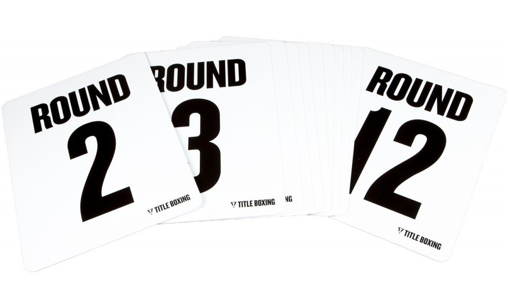
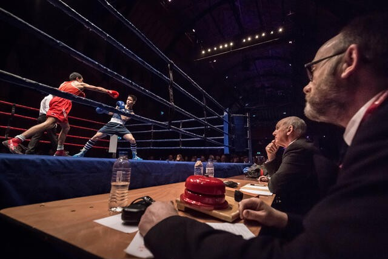
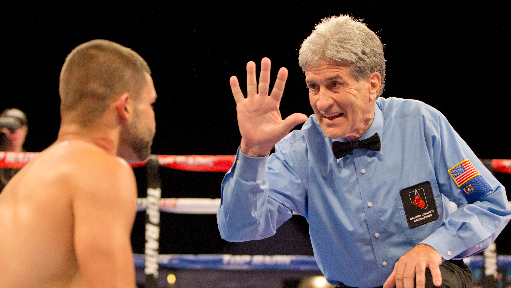

Rounds
A boxing match typically consists of a determined number of three-minute rounds, a total of up to 9 to 12 rounds with a minute spent between each round with the fighters resting in their assigned corners and receiving advice and attention from their coach and staff.

Match Scoring
Up to three judges are typically present at ringside to score the bout and assign points to the boxers, based on punches and elbows that connect, defense, knockdowns, hugging and other, more subjective, measures.
A bout in which the predetermined number of rounds passes is decided by the judges, and is said to "go the distance". The fighter with the higher score at the end of the fight is ruled the winner.

Alternate Win Conditions
If a fighter is knocked down during the fight, determined by whether the boxer touches the canvas floor of the ring with any part of their body other than the feet as a result of the opponent's punch and not a slip, as determined by the referee, the referee begins counting until the fighter returns to their feet and can continue.
Should the referee count to ten, then the knocked-down boxer is ruled "knocked out" (whether unconscious or not) and the other boxer is ruled the winner by knockout (KO).
A "technical knock-out" (TKO) is possible as well, and is ruled by the referee, fight doctor, or a fighter's corner if a fighter is unable to safely continue to fight, based upon injuries or being judged unable to effectively defend themselves.